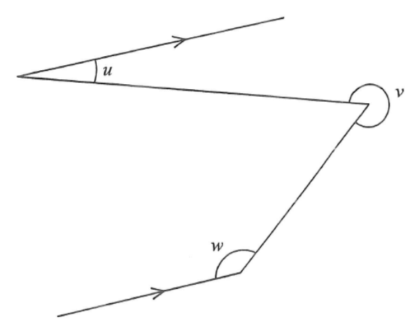

幾何 · 平行線上的角

過 $C$ 作 $CF\parallel AB\parallel DE$。
$AB\parallel CF$，$BC$ 為截線：$\angle BCF=180^{\circ}-u$（同旁內角）。
$CF\parallel DE$，$CD$ 為截線：$\angle DCF=w$（內錯角）。
圖中 $v$ 是 $C$ 處的反角，即
$$v=\angle BCF+\angle DCF=(180^{\circ}-u)+w$$
移項即得 $$u+v-w=180^{\circ}$$
所以陳述 II 恆真。
I：把 $B$ 沿 $AB$ 移動令 $u$ 改變，$v$ 隨之改變而 $w$ 不變，$u-v+w$ 不再等於 $0^{\circ}$，故 I 不恆真。
III：把 $D$ 沿 $DE$ 移動令 $w$ 改變，$u+v+w$ 隨之改變，不等於固定值 $450^{\circ}$，故 III 不恆真。
只有 II 恆真，答案 B。